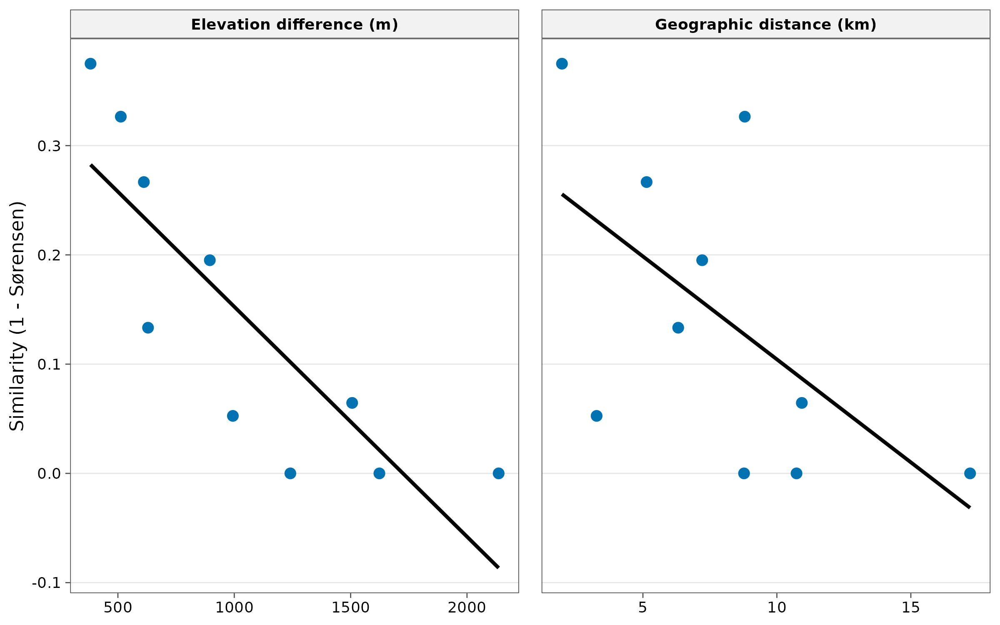
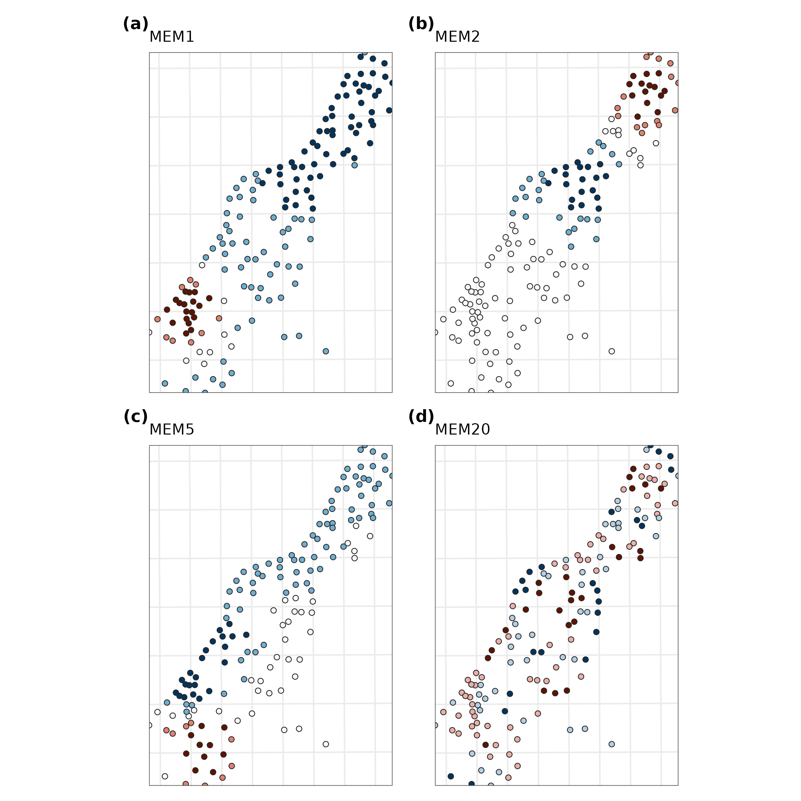

9. Distance decay and spatial eigenvectors
guide-09-decay-mem.RmdPart A. Distance decay
The concept
Two places close together tend to hold similar communities; the similarity decays as distance grows (Nekola and White 1999). Two processes cause it, and comparing kinds of distance helps tell them apart:
| Process | Similarity decays with | Example |
|---|---|---|
| Environmental filtering | Environmental distance (temperature, elevation, soil) | Lowland and montane ants differ because of temperature |
| Dispersal limitation | Geographic distance, even in the same environment | Islands, isolated forest patches |
geo_decay() pairs every two sites, computes their
dissimilarity (Sørensen total, split into turnover and nestedness as in
the tidydiversity
guide), and the distance between them: great-circle
("haversine", metres), elevation difference
("elevation") or environmental
("environmental").
Ants on Mt Wilhelm
Ant records at baits in the wet season at five elevations
(tidydiversity’s png_ants), joined to the GPS coordinates
of each site (png_ants_sites).
sites <- png_ants_sites |>
summarise(lon = mean(lon), lat = mean(lat), elevation = mean(elevation), .by = site)
ants <- tidydiversity::png_ants |>
filter(season == "wet") |>
select(site, species) |>
left_join(sites, by = "site")
geo_dist <- geo_decay(ants, site = site, species = species)
elev_dist <- geo_decay(ants, elevation = elevation, site = site, species = species, method = "elevation")
pairs <- bind_rows(
mutate(geo_dist, kind = "Geographic distance (km)", distance = distance / 1000),
mutate(elev_dist, kind = "Elevation difference (m)")
)
ggplot(pairs, aes(distance, 1 - total)) +
geom_point(size = 2.5, colour = "#0072B2") +
geom_smooth(method = "lm", formula = y ~ x, se = FALSE, colour = "black") +
facet_wrap(~kind, scales = "free_x") +
labs(x = NULL, y = "Similarity (1 - Sørensen)") +
theme_tidymapr()
r <- pairs |> summarise(spearman = cor(distance, 1 - total, method = "spearman"), .by = kind)
knitr::kable(r, digits = 2, caption = "Rank correlation between similarity and each kind of distance.")| kind | spearman |
|---|---|
| Geographic distance (km) | -0.56 |
| Elevation difference (m) | -0.93 |
Interpretation. On a mountain slope, geographic
distance and elevation difference are correlated, so both panels show
decay. Here similarity is more closely related to elevation
difference (Spearman -0.93) than to geographic distance
(-0.56): sites at similar elevation share species even when they are
kilometres apart. This points to environmental
filtering by elevation (temperature) rather than dispersal
limitation. With only 10 pairs from five sites this is descriptive; for
a test, use tidydiversity::beta_decay_model() or a partial
Mantel test on many sites, because pairs are not independent.
Part B. Moran’s eigenvector maps (dbMEM)
The concept
Chapter 3 showed that spatial data are autocorrelated, and that this breaks ordinary regression. Moran’s eigenvector maps (Dray, Legendre and Peres-Neto 2006) describe all the spatial patterns a set of sites can show, at every scale, as a series of uncorrelated variables:
- Connect sites closer than a threshold distance (by default the longest link of the minimum spanning tree, so every site is connected).
- Build spatial weights and extract their eigenvectors.
- Each eigenvector (MEM) is a spatial pattern. MEM1 is the broadest (a smooth gradient across the area); higher MEMs describe ever finer patterns. Only eigenvectors with positive autocorrelation are kept.
MEMs are used as predictors: to model spatial
structure in species data or soil properties, and to
control for autocorrelation when testing environmental
effects. tidymapr’s geo_mem() reproduces
adespatial::dbmem() exactly.
meuse <- terra::unwrap(readRDS(system.file("ex/meuse.rds", package = "terra")))
samples <- sf::st_as_sf(as.data.frame(meuse), coords = c("x", "y"), crs = 28992)
samples$log_zinc <- log(samples$zinc)
mem <- geo_mem(samples)
ncol(mem) - 2 # number of MEMs
#> [1] 48
round(head(attr(mem, "eigenvalues"), 5), 4) # MEM1 = broadest pattern
#> [1] 0.1216 0.1025 0.0857 0.0799 0.0660
attr(mem, "thresh") # truncation distance (m)
#> [1] 412.6009
plots <- lapply(c(1, 2, 5, 20), function(i) {
samples$mem <- mem[[paste0("MEM", i)]]
geo_map(subtitle = paste0("MEM", i), scale_bar = FALSE, north_arrow = FALSE, legend = "none") |>
map_points(samples, fill = mem, n = 5, palette = "RdBu", size = 1.6, group = "Value") |>
map_build() +
ggplot2::theme(axis.text = ggplot2::element_blank(), axis.ticks = ggplot2::element_blank())
})
geo_panels(plots, ncol = 2, guides = "keep")
How to read them. Blue and red are opposite signs of one pattern (darker = larger values); the values themselves have no units. MEM1 contrasts one end of the sampled strip with the other; MEM2 splits it into three bands; MEM5 has several alternating patches; MEM20 changes over a few hundred metres. Together they form a set of building blocks from which any spatial pattern of the samples can be assembled.
MEMs as predictors
Which spatial scales structure zinc? Regress log zinc on the MEMs and ask how much each set of scales explains, from the broadest MEMs only to finer ones added:
d <- sf::st_drop_geometry(cbind(samples["log_zinc"], mem[grep("^MEM", names(mem))]))
fit <- function(k) {
f <- stats::reformulate(paste0("MEM", seq_len(k)), "log_zinc")
m <- stats::lm(f, data = d)
tibble(MEMs = k, adj_R2 = summary(m)$adj.r.squared, AIC = stats::AIC(m))
}
tab <- bind_rows(lapply(c(1, 3, 5, 10, 20, 40), fit))
knitr::kable(tab, digits = 3, caption = "Log zinc explained by the first k MEMs.")| MEMs | adj_R2 | AIC |
|---|---|---|
| 1 | 0.003 | 342.326 |
| 3 | 0.037 | 339.017 |
| 5 | 0.160 | 319.692 |
| 10 | 0.354 | 283.683 |
| 20 | 0.562 | 232.306 |
| 40 | 0.617 | 226.380 |
Interpretation. The broadest pattern alone explains almost nothing (adjusted = 0.003 with MEM1). The explained variation grows only as finer MEMs are added, reaching 0.56 with 20 MEMs, and AIC is lowest with 40 of the models compared. So the spatial structure of zinc is fine-scale: high concentrations form a narrow band a few hundred metres wide along the river bank (Chapters 3 and 4), not a smooth gradient across the whole floodplain. This matches the short range of the variogram in Chapter 4.
Two cautions. Adding many MEMs always raises , so choose them by forward selection with a stopping rule (Blanchet, Legendre and Borcard 2008), not by maximising fit. And to test an environmental variable (e.g. distance to the river) while controlling for space, include the selected MEMs in the same model: the variable’s effect is then not inflated by spatial autocorrelation.
How to report it
Spatial structure was described by distance-based Moran’s eigenvector maps (dbMEM; Dray et al. 2006) computed with tidymapr from the sample coordinates (truncation distance 413 m, the longest edge of the minimum spanning tree), yielding 48 eigenvectors with positive spatial autocorrelation. MEMs were selected by forward selection (Blanchet et al. 2008) and used as covariates.
References
Blanchet, F. G., Legendre, P. and Borcard, D. (2008). Forward selection of explanatory variables. Ecology, 89, 2623-2632.
Dray, S., Legendre, P. and Peres-Neto, P. R. (2006). Spatial modelling: a comprehensive framework for principal coordinate analysis of neighbour matrices (PCNM). Ecological Modelling, 196, 483-493.
Nekola, J. C. and White, P. S. (1999). The distance decay of similarity in biogeography and ecology. Journal of Biogeography, 26, 867-878.